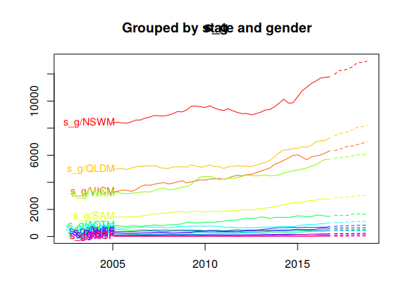
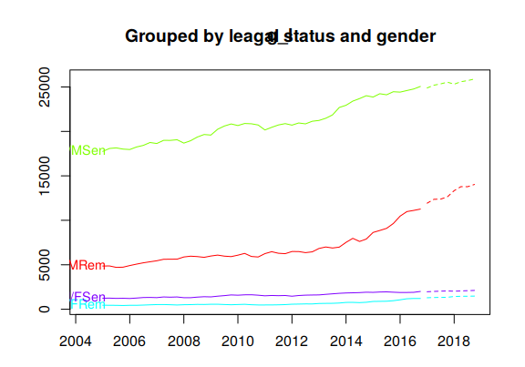
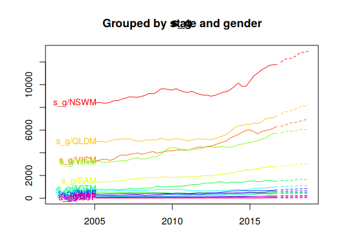
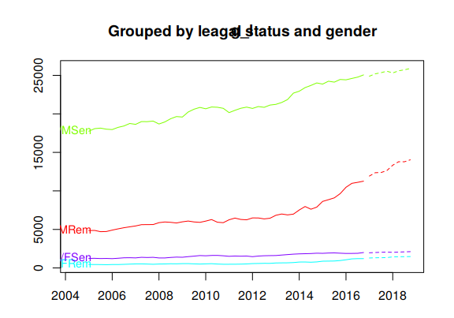

10.8 The optimal reconciliation approach
All the approaches we have considered so far in this chapter involve choosing a particular level in the aggregation structure, generating base forecasts for that level, and then either aggregating these up or disaggregating them down to generate coherent forecasts for the rest of the series. The above examples clearly reflect this through the \(\bm{P}\) matrix.
In this section we introduce an approach that instead involves generating base forecasts for each series in the aggregation structure. The base forecasts are then reconciled to generate a set of coherent forecasts that are as close as possible to the base forecasts. Therefore we describe the resulting set of coherent forecasts as optimally reconciled coherent forecasts.
The general idea is derived from wanting to find a \(\bm{P}\) matrix that minimises the forecast error of a set of coherent forecasts from forecasting each time series in the structure. In what follows we present a simplified summary of the approach. There are a few necessary steps that need to be followed in order to get a good flavour of the approach. These unfortunately complicate the presentation. However, following through these steps we get to the specification of \(\bm{P}\) in equation (10.7) which is labelled the MinT estimator as it Minimises the Trace of the forecast errors of the coherent forecasts across the whole structure. For further details and discussion please refer to Wickramasuriya, Athanasopoulos, and Hyndman (2015).
Let \[\bm{e}_{T+h}=\bm{y}_{T+h}-\tilde{\bm{y}}_h\] be the forecast errors after having produced a set of coherent forecasts across the whole structure, stacked in the same order as the data. Note that this expression is a generalisation of a forecast error as defined in Section 3.4 using matrix notation. It can be easily shown through Equation (10.6) that for a set of base forecasts that are unbiased,21 defining a \(\bm{P}\) matrix such that \(\bm{S}\bm{P}\bm{S}=\bm{S}\), generates a set of coherent forecasts \(\bm{\tilde{y}}_h\) that are also unbiased. Note that this will not hold for any top-down approach.
Wickramasuriya, Athanasopoulos, and Hyndman (2015) show in Lemma 1 that \[\begin{equation*} \text{Var}[\bm{y}_{T+h}-\tilde{\bm{y}}_h]=\bm{S}\bm{P}\bm{W}_h\bm{P}'\bm{S}' \end{equation*}\] where \(\bm{W}_h=E[(\bm{y}_{T+h}-\hat{\bm{y}}_h)(\bm{y}_{T+h}-\hat{\bm{y}}_h)']\) is the variance-covariance matrix of the \(h\)-step-ahead base forecast errors. This is a very important result as it shows that the forecast error variance of the coherent forecasts is a function of the error variance of base forecasts \(\bm{W}_h\). The objective is to find a matrix \(\bm{P}\) that minimises the error variance of the coherent forecasts. Wickramasuriya, Athanasopoulos, and Hyndman (2015) show in Theorem 1 that the optimal matrix \(\bm{P}\) that minimises the \(tr[\bm{S}\bm{P}\bm{W}_h\bm{P}'\bm{S}']\) such that \(\bm{S}\bm{P}\bm{S}=\bm{S}\), is given by \[\begin{equation} \bm{P}=(\bm{S}'\bm{W}_h^{-1}\bm{S})^{-1}\bm{S}'\bm{W}_h^{-1} \tag{10.7} \end{equation}\] referred to as the MinT estimator.
Note that the MinT estimator involves \(\bm{W}_h\) the forecast error variance of the \(h\)-step-ahead base forecasts. As this is challenging to estimate we provide below three simplifying specifications which have been shown to work well in both simulations and in practice.
Set \(\bm{W}_h=k_h\bm{I}\) \(\forall h\) where \(k_{h} > 0\).22 This is the most simplifying assumption to make. Note that in this case \(\bm{P}\) is independent of the data and no further estimation is required. The disadvantage is however that this specification does not account for the differences in the scale between the levels of the structure which naturally exist due to aggregation. The two specifications that follow do account for this. This approach is implemented in the
forecastpackage by settingr forecast(..., method = "comb", weights = "ols", ...).The weights here are referred to as the OLS (ordinary least squares) estimator as setting \(\bm{W}_h=k_h\bm{I}\) in (10.7) gives the least squares estimator we introduced in Section 5.7 with \(\bm{X}=\bm{S}\) and \(\bm{y}=\hat{\bm{y}}\).Set \(\bm{W}_{h} = k_{h}\text{diag}(\hat{\bm{W}}_{1})\) \(\forall h\) where \(k_{h} > 0\) and \[ \hat{\bm{W}}_{1} = \frac{1}{T}\sum_{t=1}^{T}\hat{\bm{e}}_{t}\hat{\bm{e}}_{t}' \] where \(\hat{\bm{e}}_{t}\) is an \(n\)-dimensional vector of residuals of the models that generated the base forecasts stacked in the same order as the data. Each element in this vector is the same as defined in Section 3.3. The approach is implemented by setting
r forecast(..., method = "comb", weights = "wls", ...).This specification scales the base forecasts using the variance of the residuals and it is therefore referred to as the WLS (weighted least squares) estimator using variance scaling.- Set \(\bm{W}_{h}=k_{h}\bm{\Lambda}\), \(\forall h\) where \(k_{h} > 0\) and \(\bm{\Lambda}=\text{diag}(\bm{S}\bm{1})\) where \(\bm{1}\) is a unit column vector of dimension \(n\). This specification assumes that the bottom-level base forecast errors each have variance \(k_{h}\) and are uncorrelated between nodes. Hence each element of the diagonal \(\bm{\Lambda}\) matrix contains the number of forecast error variances contributing to that aggregation level. This estimator only depends on the structure of the hierarchy or the grouped time series. It is therefore referred to as the specification that applies structural scaling. Notice that the structural scaling assumes equivariant forecast errors only at the bottom-level of the structure and not across all levels which is unrealistically assumed by the first specification. Furthermore, applying the structural scaling specification is particularly useful in cases where residuals are not available and therefore variance scaling cannot be applied. For example, in cases where the base forecasts are generated by judgemental forecasting introduced in Chapter 4. This approach is implemented by setting
r forecast(..., method = "comb", weights = "nseries", ...). An alterantive to the above simplifying specifications is to direclty estimate the full covariance matrix. The most obvious and simple way would be to use the sample covariance. This is implemented by setting
r forecast(..., method = "comb", weights = "mint", covariance = "sam", ...).However, for cases that \(m \ge T\) this is not a good estimator. Instead we use a shrinkage estimator which shrinks the sample covariance to a diagonal matrix. This is implemented by setting
r forecast(..., method = "comb", weights = "mint", covariance = "shr", ...).For more details on MinT please refer to Wickramasuriya, Athanasopoulos, and Hyndman (2015).
In summary, unlike any other existing approach, the optimal reconciliation forecasts are generated using all the information available within a hierarchical or a grouped structure. This is very important as particular aggregation levels or groupings may reveal features of the data that are of interest to the user and are important to be modelled. These features may be completely hidden or not easily identifiable at other levels. For example, consider a hierarchical structure reflecting the geographical division of a country into states, regions, down to a very fine grid of statistical local areas. There are significant differences between the seasonal patterns in the number of tourists visiting a state or a region that is mainly seen as a summer destination versus a state or a region that caters for winter activities. These differences will be smoothed at the country level due to aggregation and on the other hand it may be extremely challenging to identify at the very bottom-level of a statistical local area due to noise. Another example for a grouped structure is the difference in the sales of clothes between genders. Such differences will be completely smoothed out at the very top-level of aggregation considering total sales, or may be very challenging to identify due to noise at the very bottom-level.
Example: Forecasting Australian prison population (continued)
Figure 10.8 plots coherent forecasts generated by the optimal reconciliation approach with the WLS estimator using variance scaling.
fcsts = forecast(prison.gts, h = 8, method = "comb", weights = "wls", fmethod = "ets")
plot(fcsts,levels = 0, color_lab=TRUE)
title(main = "Total")
plot(fcsts,levels = 1, color_lab=TRUE)
title(main = "Grouped by state")
plot(fcsts,levels = 2, color_lab=TRUE)
title(main = "Grouped by leagal status")
plot(fcsts,levels = 3, color_lab=TRUE)
title(main = "Grouped by gender")

Figure 10.8: Coherent forecasts for the total Australian adult prison population and for the population grouped by state, by legal status and by gender.
Figure 10.9 plots the coherent forecasts for all the interactions of the attributes down to the bottom-level.
 

Figure 10.9: Coherent forecasts for the Australian adult prison population grouped by all interactions of attributes.
The accuracy.gts comman is useful for evaluating the forecast accuracy across hierarchical or grouped structures. The following table summarises the accuracy of the bottom-up and the optimal reconciliation approaches, forecasting 2015 Q1 to 2016 Q4 as a test period.
The results show that the optimal reconciliation approach generates more accurate forecasts especially for the top level. In general we find that as the optimal reconciliation approach uses information from all levels in the structure it generates more accurate coherent forecasts than the other tradiitonal alternatives which use limited information.
train <- window(prison.gts,end=c(2014,4))
test <- window(prison.gts,start=2015)
fcsts.opt = forecast(train, h = 8, method = "comb", weights = "wls", fmethod = "ets")
fcsts.bu = forecast(train, h = 8, method = "bu", fmethod = "ets")
tab <- matrix(NA,ncol=4,nrow=6)
rownames(tab) <- c("Total", "State", "Legal status", "Gender","Bottom", "All series")
colnames(tab) <- c("Bottom-up MAPE","Bottom-up MASE","Optimal MAPE","Optimal MASE")
tab[1,] <-c(accuracy.gts(fcsts.bu,test,levels = 0)[c("MAPE","MASE"),"Total"],
accuracy.gts(fcsts.opt,test,levels = 0)[c("MAPE","MASE"),"Total"])
j=2
for(i in c(1:3,7)){
tab[j,] <-c(mean(accuracy.gts(fcsts.bu,test,levels = i)["MAPE",]),
mean(accuracy.gts(fcsts.bu,test,levels = i)["MASE",]),
mean(accuracy.gts(fcsts.opt,test,levels = i)["MAPE",]),
mean(accuracy.gts(fcsts.opt,test,levels = i)["MASE",]))
j=j+1
}
tab[6,] <-c(mean(accuracy.gts(fcsts.bu,test)["MAPE",]),
mean(accuracy.gts(fcsts.bu,test)["MASE",]),
mean(accuracy.gts(fcsts.opt,test)["MAPE",]),
mean(accuracy.gts(fcsts.opt,test)["MASE",]))
knitr::kable(tab, digits=2, booktabs=TRUE)| Bottom-up MAPE | Bottom-up MASE | Optimal MAPE | Optimal MASE | |
|---|---|---|---|---|
| Total | 4.58 | 1.58 | 2.01 | 0.69 |
| State | 7.76 | 1.89 | 7.27 | 1.79 |
| Legal status | 8.12 | 2.53 | 8.03 | 2.54 |
| Gender | 6.09 | 1.63 | 3.62 | 0.91 |
| Bottom | 15.87 | 2.23 | 14.77 | 2.11 |
| All series | 12.43 | 2.14 | 11.53 | 2.01 |
References
Wickramasuriya, Shanika L, George Athanasopoulos, and Rob J Hyndman. 2015. “Forecasting Hierarchical and Grouped Time Series Through Trace Minimization.” Working paper 15/15. Monash University Econometrics & Business Statistics.